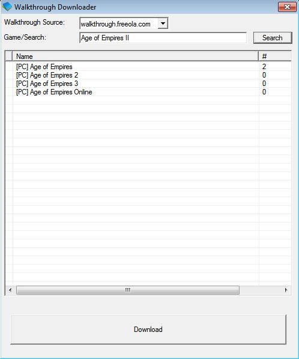
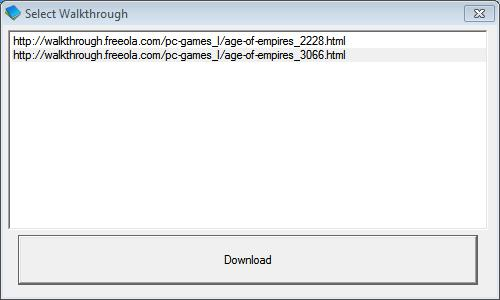

Function
Downloads walkthroughs and installs them in the local folder ready for GameManager FrontEnd to access and install.
Interface

You should be greeted with this screen when you click the
walkthrough button from within FrontEnd, if the wrong results are
returned then change the keywords in the box next to 'Game/Search'
then click Search. Removing numbers and punctuation increases
relevant results and removing a few keywords will increase results if
its not returning any. The number next to each game name is the
actual number of walkthroughs.
If its zero the game is in the
database but nobody has wrote a walkthrough for it,
if its one
then clicking download will download the single one
if its greater
than one then you will be presented with the following screens:

Select
one of them and click Download button to download it to a local
folder.